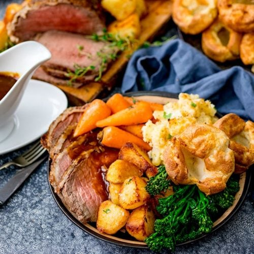

Sunday Roast

Description
Cooking a huge rib roast can be quite daunting so we love this simplified method and the bone marrow butter takes it to the next level. Ask your butcher to split the bones for you.
Check out our expert guide to create the perfect roast dinner here, complete with centrepieces, side dishes and all the trimmings. Plus, some easy desserts to serve after your roast.
Ingredients
- rib of beef 1, about 1kg, (sometimes called cote de boeuf) French-trimmed
- olive oil
- cracked black pepper
- sea salt flakes
- watercress dressed with lemon juice and olive oil to serve
- marrow bones 2, split lengthways
- shallots 2, finely chopped
- soft butter 150g
Steps
- To make the bone marrow butter, heat the oven to 180C/fan 160C/gas 4. Put the bones on a baking tray and cook in the oven for 20 minutes. Once cool enough to handle, scrape the marrow from the bones into a bowl.
- Heat a small knob of the soft butter in a pan then gently cook the shallots with a pinch of salt until very soft. Cool then tip the shallot, marrow, the rest of the butter and parsley into a bowl. Season well then beat everything with an electric whisk until whipped and pale in colour. Wrap into a log in clingfilm and keep in the fridge.
- Take the rib out of the fridge about 45 minutes before you want to cook it. Rub olive oil all over the meat then season heavily with cracked black pepper and sea salt.
- Heat the oven to 200C/fan 180C/gas 6. Heat a griddle or heavy-bottomed frying pan to very hot and sear the beef – starting with the fat side so the fat renders into the pan. Sear the beef on each side until nicely browned – about 8-10 minutes – then lift into a roasting tin and finish cooking in the oven for 25-30 minutes for medium, turning halfway. When the beef is done, let it rest for 15 minutes. Serve on a board with slices of the butter and dressed watercress.
- Enjoy!